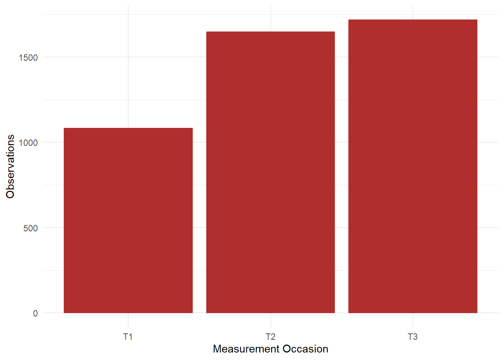

Sample Size
N = number of participants, n = number of data points across measurement occasions
Intro: For the last 3 months I have been thinking at
work that…
Text: things are getting worse as I get older.
Scale:
Citation: Lawton, M. P. (1975). The Philadelphia Geriatric Center Morale Scale: A revision. Journal of Gerontology, 30, 85–89.https://doi.org/10.1093/geronj/30.1.85
Intro: In den letzten 3 Monaten habe ich bei der
Arbeit gedacht, dass…
Text: …die Dinge schlechter
werden je älter ich werde.
Scale:
Citation: Self-translated
Sample Size
N = number of participants, n = number of data points across measurement occasions

Intro: In the last 3 months/4 weeks…
Text: …I expected to begin collecting a pension in the
near future.
Scale:
Citation: Adams, G. A., & Beehr, T. A. (1998). Turnover and retirement: A comparison of their similarities and differences. Personnel Psychology, 51(3), 643–665. https://doi.org/10.1111/j.1744-6570.1998.tb00255.x
Intro: In den letzten 3 Monaten/4 Wochen…
Text: …rechnete ich damit, bald Rente zu erhalten.
Scale:
Citation: Self-translated